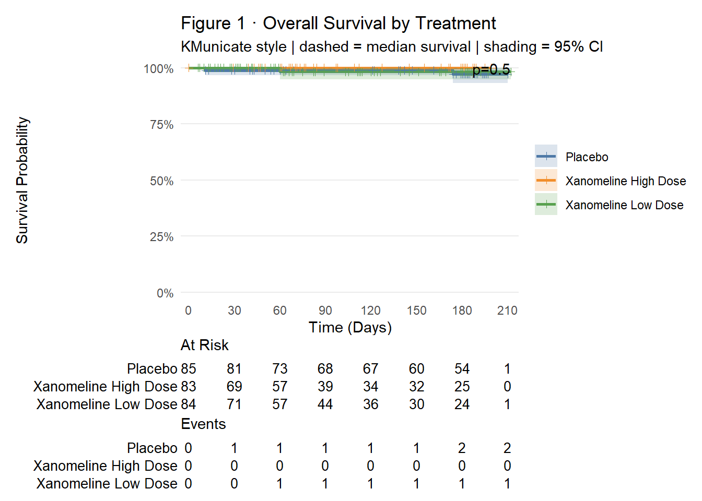
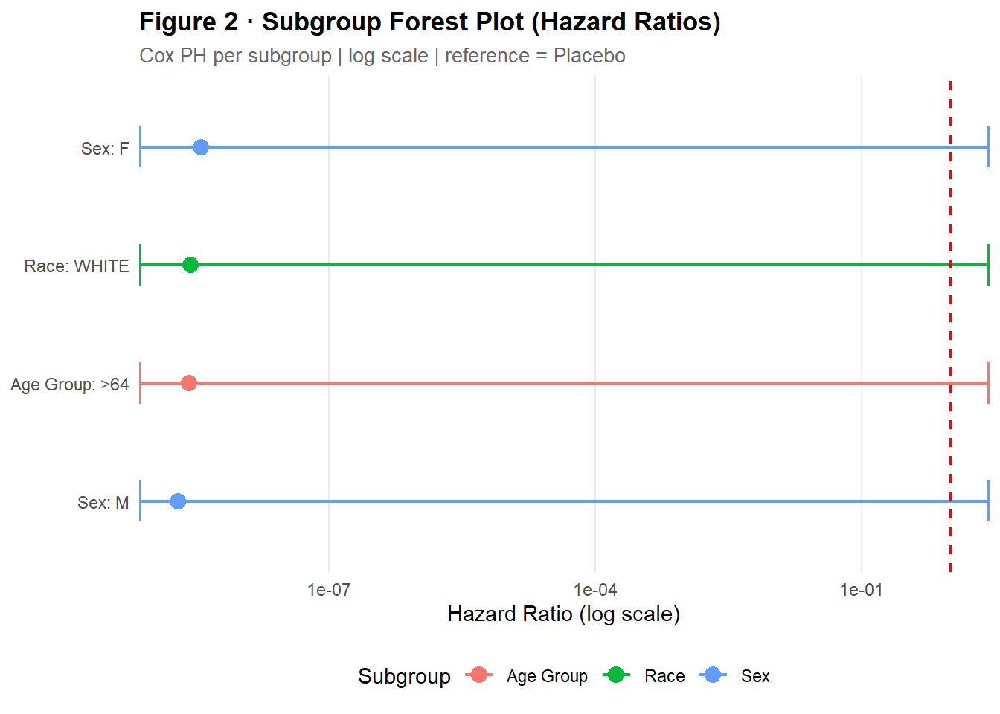
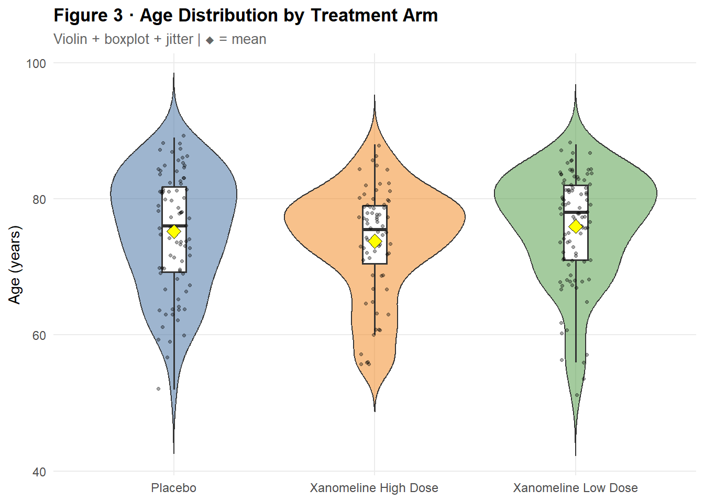

Day 30: Capstone - Full Clinical Reporting Workflow
Survival · Safety · Lab · Subgroups across the pharmaverse
< a target="_blank" href="../index.html" class="resource-link"> Back to Roadmap
1 Overview
Day 30 is the capstone. A single Quarto document drives a complete Efficacy · Safety · Lab reporting workflow using five pharmaverse packages and eight figures.
Domain
Package
Key output
Data
pharmaverseadam
ADSL, ADAE, ADLB
Efficacy
ggsurvfit + survival
KM curve · Forest plot
Safety
ggplot2
AE body system · Preferred terms
Lab
ggplot2
Lab trend · Grade distribution
Demog
gtsummary + ggplot2
Table + violin · Swimmer plot
2 Setup
< a target="_blank" href="#cb1-1" aria-hidden="true" tabindex="-1">library(ggsurvfit)< a target="_blank" href="#cb1-2" aria-hidden="true" tabindex="-1">library(gtsummary)< a target="_blank" href="#cb1-3" aria-hidden="true" tabindex="-1">library(survival)< a target="_blank" href="#cb1-4" aria-hidden="true" tabindex="-1">library(broom)< a target="_blank" href="#cb1-5" aria-hidden="true" tabindex="-1">library(purrr)< a target="_blank" href="#cb1-6" aria-hidden="true" tabindex="-1">library(pharmaverseadam)< a target="_blank" href="#cb1-7" aria-hidden="true" tabindex="-1">library(dplyr)< a target="_blank" href="#cb1-8" aria-hidden="true" tabindex="-1">library(ggplot2)< a target="_blank" href="#cb1-9" aria-hidden="true" tabindex="-1">library(stringr)< a target="_blank" href="#cb1-10" aria-hidden="true" tabindex="-1">library(knitr)< a target="_blank" href="#cb1-11" aria-hidden="true" tabindex="-1">< a target="_blank" href="#cb1-12" aria-hidden="true" tabindex="-1"># ── Load datasets ────────────────────────────────────────────────────────────< a target="_blank" href="#cb1-13" aria-hidden="true" tabindex="-1">adsl <- pharmaverseadam::adsl< a target="_blank" href="#cb1-14" aria-hidden="true" tabindex="-1">adae <- pharmaverseadam::adae< a target="_blank" href="#cb1-15" aria-hidden="true" tabindex="-1">adlb <- pharmaverseadam::adlb< a target="_blank" href="#cb1-16" aria-hidden="true" tabindex="-1">< a target="_blank" href="#cb1-17" aria-hidden="true" tabindex="-1">cat("adsl:", nrow(adsl), "rows |", ncol(adsl), "cols\n")
< a target="_blank" href="#cb7-1" aria-hidden="true" tabindex="-1"># Show what treatment columns adae actually carries< a target="_blank" href="#cb7-2" aria-hidden="true" tabindex="-1">ae_trt_cols <-intersect(names(adae), c("TRTA", "TRTP", "TRT01A", "TRT01P", "ARM"))< a target="_blank" href="#cb7-3" aria-hidden="true" tabindex="-1">cat("Treatment columns in adae:", if (length(ae_trt_cols)) ae_trt_cols else"NONE", "\n")
Treatment columns in adae: ARM TRT01P TRT01A
< a target="_blank" href="#cb9-1" aria-hidden="true" tabindex="-1"># ── Subject-to-treatment lookup from ADSL ───────────────────────────────────< a target="_blank" href="#cb9-2" aria-hidden="true" tabindex="-1"># pharmaverseadam::adae may not carry a treatment column at all.< a target="_blank" href="#cb9-3" aria-hidden="true" tabindex="-1"># Safe pattern: distinct(USUBJID, event) first, THEN left_join treatment.< a target="_blank" href="#cb9-4" aria-hidden="true" tabindex="-1"># This avoids any dependency on adae containing a treatment variable,< a target="_blank" href="#cb9-5" aria-hidden="true" tabindex="-1"># and avoids .x/.y conflicts from joining a column that already exists.< a target="_blank" href="#cb9-6" aria-hidden="true" tabindex="-1">trt_lookup <- adsl |>< a target="_blank" href="#cb9-7" aria-hidden="true" tabindex="-1"> dplyr::filter(SAFFL =="Y") |>< a target="_blank" href="#cb9-8" aria-hidden="true" tabindex="-1"> dplyr::select(USUBJID, TRT01A) |>< a target="_blank" href="#cb9-9" aria-hidden="true" tabindex="-1"> dplyr::distinct()< a target="_blank" href="#cb9-10" aria-hidden="true" tabindex="-1">< a target="_blank" href="#cb9-11" aria-hidden="true" tabindex="-1">cat("trt_lookup rows:", nrow(trt_lookup), "\n")
< a target="_blank" href="#cb15-1" aria-hidden="true" tabindex="-1"># ── Safety-population N per arm (denominator for AE %) ──────────────────────< a target="_blank" href="#cb15-2" aria-hidden="true" tabindex="-1">trt_n <- adsl |>< a target="_blank" href="#cb15-3" aria-hidden="true" tabindex="-1"> dplyr::filter(SAFFL =="Y") |>< a target="_blank" href="#cb15-4" aria-hidden="true" tabindex="-1"> dplyr::count(TRT01A, name ="N_TRT")< a target="_blank" href="#cb15-5" aria-hidden="true" tabindex="-1">< a target="_blank" href="#cb15-6" aria-hidden="true" tabindex="-1"># ── First available lab PARAMCD ──────────────────────────────────────────────< a target="_blank" href="#cb15-7" aria-hidden="true" tabindex="-1">lab_param <-unique(adlb$PARAMCD)[1]< a target="_blank" href="#cb15-8" aria-hidden="true" tabindex="-1">cat("\nLab parameter for Figures 6 & 7:", lab_param, "\n")
Lab parameter for Figures 6 & 7: ALB
3 Efficacy
3.1 Figure 1 · Overall Survival - KM Curve
< a target="_blank" href="#cb17-1" aria-hidden="true" tabindex="-1"># survfit2() is required for add_pvalue().< a target="_blank" href="#cb17-2" aria-hidden="true" tabindex="-1"># Layering order: geoms → scales → theme → add_risktable() last.< a target="_blank" href="#cb17-3" aria-hidden="true" tabindex="-1">< a target="_blank" href="#cb17-4" aria-hidden="true" tabindex="-1">km_fit <-survfit2(Surv_CNSR(AVAL, CNSR) ~ TRTP, data = adtte)< a target="_blank" href="#cb17-5" aria-hidden="true" tabindex="-1">km_fit
Call: survfit(formula = Surv_CNSR(AVAL, CNSR) ~ TRTP, data = adtte)
n events median 0.95LCL 0.95UCL
TRTP=Placebo 85 2 NA NA NA
TRTP=Xanomeline High Dose 83 0 NA NA NA
TRTP=Xanomeline Low Dose 84 1 NA NA NA
< a target="_blank" href="#cb19-1" aria-hidden="true" tabindex="-1">km_fit |>< a target="_blank" href="#cb19-2" aria-hidden="true" tabindex="-1"> ggsurvfit(linewidth =1) +< a target="_blank" href="#cb19-3" aria-hidden="true" tabindex="-1"> add_confidence_interval() +< a target="_blank" href="#cb19-4" aria-hidden="true" tabindex="-1"> add_censor_mark(shape =3, size =1.5) +< a target="_blank" href="#cb19-5" aria-hidden="true" tabindex="-1"> add_quantile(y_value =0.5, color ="grey40",< a target="_blank" href="#cb19-6" aria-hidden="true" tabindex="-1"> linewidth =0.75, linetype ="dashed") +< a target="_blank" href="#cb19-7" aria-hidden="true" tabindex="-1"> add_pvalue(location ="annotation", prepend_p =TRUE) +< a target="_blank" href="#cb19-8" aria-hidden="true" tabindex="-1"> scale_ggsurvfit() +< a target="_blank" href="#cb19-9" aria-hidden="true" tabindex="-1"> scale_colour_manual(values = trt_col) +< a target="_blank" href="#cb19-10" aria-hidden="true" tabindex="-1"> scale_fill_manual(values = trt_col) +< a target="_blank" href="#cb19-11" aria-hidden="true" tabindex="-1"> theme_ggsurvfit_KMunicate() +< a target="_blank" href="#cb19-12" aria-hidden="true" tabindex="-1"> labs(< a target="_blank" href="#cb19-13" aria-hidden="true" tabindex="-1"> title ="Figure 1 \u00b7 Overall Survival by Treatment",< a target="_blank" href="#cb19-14" aria-hidden="true" tabindex="-1"> subtitle ="KMunicate style | dashed = median survival | shading = 95% CI",< a target="_blank" href="#cb19-15" aria-hidden="true" tabindex="-1"> x ="Time (Days)",< a target="_blank" href="#cb19-16" aria-hidden="true" tabindex="-1"> y ="Survival Probability"< a target="_blank" href="#cb19-17" aria-hidden="true" tabindex="-1"> ) +< a target="_blank" href="#cb19-18" aria-hidden="true" tabindex="-1"> add_risktable(< a target="_blank" href="#cb19-19" aria-hidden="true" tabindex="-1"> risktable_stats =c("n.risk", "cum.event"),< a target="_blank" href="#cb19-20" aria-hidden="true" tabindex="-1"> stats_label =list(n.risk ="At Risk", cum.event ="Events")< a target="_blank" href="#cb19-21" aria-hidden="true" tabindex="-1"> )

3.2 Figure 2 · Subgroup Forest Plot
< a target="_blank" href="#cb20-1" aria-hidden="true" tabindex="-1"># Subgroup levels are detected dynamically from adtte.< a target="_blank" href="#cb20-2" aria-hidden="true" tabindex="-1"># tryCatch() silently skips subgroups where coxph fails.< a target="_blank" href="#cb20-3" aria-hidden="true" tabindex="-1">< a target="_blank" href="#cb20-4" aria-hidden="true" tabindex="-1">subgroup_spec <-list(< a target="_blank" href="#cb20-5" aria-hidden="true" tabindex="-1"> list(var ="AGEGR1", label ="Age Group"),< a target="_blank" href="#cb20-6" aria-hidden="true" tabindex="-1"> list(var ="SEX", label ="Sex"),< a target="_blank" href="#cb20-7" aria-hidden="true" tabindex="-1"> list(var ="RACE", label ="Race")< a target="_blank" href="#cb20-8" aria-hidden="true" tabindex="-1">)< a target="_blank" href="#cb20-9" aria-hidden="true" tabindex="-1">< a target="_blank" href="#cb20-10" aria-hidden="true" tabindex="-1">fit_subgroup_cox <-function(df, var_label, level_val) {< a target="_blank" href="#cb20-11" aria-hidden="true" tabindex="-1"> tryCatch({< a target="_blank" href="#cb20-12" aria-hidden="true" tabindex="-1"> fit <- survival::coxph(Surv_CNSR(AVAL, CNSR) ~ TRTP, data = df)< a target="_blank" href="#cb20-13" aria-hidden="true" tabindex="-1"> broom::tidy(fit, exponentiate =TRUE, conf.int =TRUE) |>< a target="_blank" href="#cb20-14" aria-hidden="true" tabindex="-1"> dplyr::slice(1) |>< a target="_blank" href="#cb20-15" aria-hidden="true" tabindex="-1"> dplyr::mutate(< a target="_blank" href="#cb20-16" aria-hidden="true" tabindex="-1"> var_label = var_label,< a target="_blank" href="#cb20-17" aria-hidden="true" tabindex="-1"> level =as.character(level_val),< a target="_blank" href="#cb20-18" aria-hidden="true" tabindex="-1"> panel_lbl =paste0(var_label, ": ", level_val)< a target="_blank" href="#cb20-19" aria-hidden="true" tabindex="-1"> )< a target="_blank" href="#cb20-20" aria-hidden="true" tabindex="-1"> }, error =function(e) dplyr::tibble())< a target="_blank" href="#cb20-21" aria-hidden="true" tabindex="-1">}< a target="_blank" href="#cb20-22" aria-hidden="true" tabindex="-1">< a target="_blank" href="#cb20-23" aria-hidden="true" tabindex="-1">forest_df <- purrr::map_dfr(subgroup_spec, function(sg) {< a target="_blank" href="#cb20-24" aria-hidden="true" tabindex="-1"> purrr::map_dfr(unique(adtte[[sg$var]]), function(lv) {< a target="_blank" href="#cb20-25" aria-hidden="true" tabindex="-1"> fit_subgroup_cox(adtte[adtte[[sg$var]] == lv, ], sg$label, lv)< a target="_blank" href="#cb20-26" aria-hidden="true" tabindex="-1"> })< a target="_blank" href="#cb20-27" aria-hidden="true" tabindex="-1">}) |>< a target="_blank" href="#cb20-28" aria-hidden="true" tabindex="-1"> dplyr::filter(!is.na(estimate), !is.na(conf.low), !is.na(conf.high))< a target="_blank" href="#cb20-29" aria-hidden="true" tabindex="-1">< a target="_blank" href="#cb20-30" aria-hidden="true" tabindex="-1">cat("Forest plot rows:", nrow(forest_df), "\n")
Forest plot rows: 4
< a target="_blank" href="#cb22-1" aria-hidden="true" tabindex="-1">ggplot(forest_df,< a target="_blank" href="#cb22-2" aria-hidden="true" tabindex="-1"> aes(x = estimate, y =reorder(panel_lbl, estimate),< a target="_blank" href="#cb22-3" aria-hidden="true" tabindex="-1"> xmin = conf.low, xmax = conf.high, colour = var_label)) +< a target="_blank" href="#cb22-4" aria-hidden="true" tabindex="-1"> geom_point(size =3.5) +< a target="_blank" href="#cb22-5" aria-hidden="true" tabindex="-1"> geom_errorbarh(height =0.35, linewidth =0.8) +< a target="_blank" href="#cb22-6" aria-hidden="true" tabindex="-1"> geom_vline(xintercept =1, linetype ="dashed",< a target="_blank" href="#cb22-7" aria-hidden="true" tabindex="-1"> colour ="red", linewidth =0.7) +< a target="_blank" href="#cb22-8" aria-hidden="true" tabindex="-1"> scale_x_log10() +< a target="_blank" href="#cb22-9" aria-hidden="true" tabindex="-1"> labs(< a target="_blank" href="#cb22-10" aria-hidden="true" tabindex="-1"> title ="Figure 2 \u00b7 Subgroup Forest Plot (Hazard Ratios)",< a target="_blank" href="#cb22-11" aria-hidden="true" tabindex="-1"> subtitle ="Cox PH per subgroup | log scale | reference = Placebo",< a target="_blank" href="#cb22-12" aria-hidden="true" tabindex="-1"> x ="Hazard Ratio (log scale)",< a target="_blank" href="#cb22-13" aria-hidden="true" tabindex="-1"> y =NULL,< a target="_blank" href="#cb22-14" aria-hidden="true" tabindex="-1"> colour ="Subgroup"< a target="_blank" href="#cb22-15" aria-hidden="true" tabindex="-1"> ) +< a target="_blank" href="#cb22-16" aria-hidden="true" tabindex="-1"> theme_clin()

4 Demographics
4.1 Table 1 · Baseline Characteristics
< a target="_blank" href="#cb23-1" aria-hidden="true" tabindex="-1"># adtte inherits all adsl columns -- no join needed.< a target="_blank" href="#cb23-2" aria-hidden="true" tabindex="-1">adtte |>< a target="_blank" href="#cb23-3" aria-hidden="true" tabindex="-1"> dplyr::select(AGE, AGEGR1, SEX, RACE, TRTP) |>< a target="_blank" href="#cb23-4" aria-hidden="true" tabindex="-1"> gtsummary::tbl_summary(< a target="_blank" href="#cb23-5" aria-hidden="true" tabindex="-1"> by = TRTP,< a target="_blank" href="#cb23-6" aria-hidden="true" tabindex="-1"> label =list(AGE ~"Age (years)", AGEGR1 ~"Age Group",< a target="_blank" href="#cb23-7" aria-hidden="true" tabindex="-1"> SEX ~"Sex", RACE ~"Race"),< a target="_blank" href="#cb23-8" aria-hidden="true" tabindex="-1"> statistic =list(< a target="_blank" href="#cb23-9" aria-hidden="true" tabindex="-1"> all_continuous() ~"{mean} ({sd})",< a target="_blank" href="#cb23-10" aria-hidden="true" tabindex="-1"> all_categorical() ~"{n} ({p}%)"< a target="_blank" href="#cb23-11" aria-hidden="true" tabindex="-1"> ),< a target="_blank" href="#cb23-12" aria-hidden="true" tabindex="-1"> digits =all_continuous() ~1,< a target="_blank" href="#cb23-13" aria-hidden="true" tabindex="-1"> missing ="no"< a target="_blank" href="#cb23-14" aria-hidden="true" tabindex="-1"> ) |>< a target="_blank" href="#cb23-15" aria-hidden="true" tabindex="-1"> gtsummary::add_overall() |>< a target="_blank" href="#cb23-16" aria-hidden="true" tabindex="-1"> gtsummary::bold_labels() |>< a target="_blank" href="#cb23-17" aria-hidden="true" tabindex="-1"> gtsummary::as_kable()
Characteristic
Overall N = 252
Placebo N = 85
Xanomeline High Dose N = 83
Xanomeline Low Dose N = 84
Age (years)
75.1 (8.3)
75.3 (8.6)
74.3 (7.9)
75.7 (8.3)
Age Group
>64
219 (87%)
71 (84%)
72 (87%)
76 (90%)
18-64
33 (13%)
14 (16%)
11 (13%)
8 (9.5%)
Sex
F
142 (56%)
52 (61%)
40 (48%)
50 (60%)
M
110 (44%)
33 (39%)
43 (52%)
34 (40%)
Race
AMERICAN INDIAN OR ALASKA NATIVE
1 (0.4%)
0 (0%)
1 (1.2%)
0 (0%)
BLACK OR AFRICAN AMERICAN
23 (9.1%)
8 (9.4%)
9 (11%)
6 (7.1%)
WHITE
228 (90%)
77 (91%)
73 (88%)
78 (93%)
4.2 Figure 3 · Age Distribution by Treatment
< a target="_blank" href="#cb24-1" aria-hidden="true" tabindex="-1">adsl |>< a target="_blank" href="#cb24-2" aria-hidden="true" tabindex="-1"> dplyr::filter(SAFFL =="Y") |>< a target="_blank" href="#cb24-3" aria-hidden="true" tabindex="-1"> ggplot(aes(x = TRT01A, y = AGE, fill = TRT01A)) +< a target="_blank" href="#cb24-4" aria-hidden="true" tabindex="-1"> geom_violin(alpha =0.55, trim =FALSE) +< a target="_blank" href="#cb24-5" aria-hidden="true" tabindex="-1"> geom_boxplot(width =0.12, fill ="white",< a target="_blank" href="#cb24-6" aria-hidden="true" tabindex="-1"> outlier.shape =NA, linewidth =0.6) +< a target="_blank" href="#cb24-7" aria-hidden="true" tabindex="-1"> geom_jitter(width =0.08, size =0.9, alpha =0.35) +< a target="_blank" href="#cb24-8" aria-hidden="true" tabindex="-1"> stat_summary(fun = mean, geom ="point",< a target="_blank" href="#cb24-9" aria-hidden="true" tabindex="-1"> shape =23, size =3.5, fill ="yellow", colour ="black") +< a target="_blank" href="#cb24-10" aria-hidden="true" tabindex="-1"> scale_fill_manual(values = trt_col) +< a target="_blank" href="#cb24-11" aria-hidden="true" tabindex="-1"> labs(< a target="_blank" href="#cb24-12" aria-hidden="true" tabindex="-1"> title ="Figure 3 \u00b7 Age Distribution by Treatment Arm",< a target="_blank" href="#cb24-13" aria-hidden="true" tabindex="-1"> subtitle ="Violin + boxplot + jitter | \u25c6 = mean",< a target="_blank" href="#cb24-14" aria-hidden="true" tabindex="-1"> x =NULL,< a target="_blank" href="#cb24-15" aria-hidden="true" tabindex="-1"> y ="Age (years)"< a target="_blank" href="#cb24-16" aria-hidden="true" tabindex="-1"> ) +< a target="_blank" href="#cb24-17" aria-hidden="true" tabindex="-1"> theme_clin() +< a target="_blank" href="#cb24-18" aria-hidden="true" tabindex="-1"> theme(legend.position ="none",< a target="_blank" href="#cb24-19" aria-hidden="true" tabindex="-1"> axis.text.x =element_text(size =9))

5 Safety - Adverse Events
5.1 Figure 4 · AE Incidence by Body System
< a target="_blank" href="#cb25-1" aria-hidden="true" tabindex="-1"># Key pattern: distinct(USUBJID, AEBODSYS) first -- no treatment column needed.< a target="_blank" href="#cb25-2" aria-hidden="true" tabindex="-1"># Then left_join trt_lookup to add TRT01A safely, then count() and %.< a target="_blank" href="#cb25-3" aria-hidden="true" tabindex="-1"># This works regardless of whether adae carries a treatment column.< a target="_blank" href="#cb25-4" aria-hidden="true" tabindex="-1">< a target="_blank" href="#cb25-5" aria-hidden="true" tabindex="-1">ae_soc <- adae |>< a target="_blank" href="#cb25-6" aria-hidden="true" tabindex="-1"> dplyr::filter(SAFFL =="Y", TRTEMFL =="Y") |>< a target="_blank" href="#cb25-7" aria-hidden="true" tabindex="-1"> dplyr::distinct(USUBJID, AEBODSYS) |>< a target="_blank" href="#cb25-8" aria-hidden="true" tabindex="-1"> dplyr::left_join(trt_lookup, by ="USUBJID") |>< a target="_blank" href="#cb25-9" aria-hidden="true" tabindex="-1"> dplyr::count(TRT01A, AEBODSYS, name ="n_subj") |>< a target="_blank" href="#cb25-10" aria-hidden="true" tabindex="-1"> dplyr::left_join(trt_n, by ="TRT01A") |>< a target="_blank" href="#cb25-11" aria-hidden="true" tabindex="-1"> dplyr::mutate(pct = n_subj / N_TRT *100)< a target="_blank" href="#cb25-12" aria-hidden="true" tabindex="-1">< a target="_blank" href="#cb25-13" aria-hidden="true" tabindex="-1">top_soc <- ae_soc |>< a target="_blank" href="#cb25-14" aria-hidden="true" tabindex="-1"> dplyr::group_by(AEBODSYS) |>< a target="_blank" href="#cb25-15" aria-hidden="true" tabindex="-1"> dplyr::summarise(max_pct =max(pct), .groups ="drop") |>< a target="_blank" href="#cb25-16" aria-hidden="true" tabindex="-1"> dplyr::slice_max(max_pct, n =10) |>< a target="_blank" href="#cb25-17" aria-hidden="true" tabindex="-1"> dplyr::pull(AEBODSYS)< a target="_blank" href="#cb25-18" aria-hidden="true" tabindex="-1">< a target="_blank" href="#cb25-19" aria-hidden="true" tabindex="-1">ae_soc |>< a target="_blank" href="#cb25-20" aria-hidden="true" tabindex="-1"> dplyr::filter(AEBODSYS %in% top_soc) |>< a target="_blank" href="#cb25-21" aria-hidden="true" tabindex="-1"> dplyr::mutate(AEBODSYS = stringr::str_wrap(AEBODSYS, width =38)) |>< a target="_blank" href="#cb25-22" aria-hidden="true" tabindex="-1"> ggplot(aes(x = pct,< a target="_blank" href="#cb25-23" aria-hidden="true" tabindex="-1"> y =reorder(AEBODSYS, pct),< a target="_blank" href="#cb25-24" aria-hidden="true" tabindex="-1"> fill = TRT01A)) +< a target="_blank" href="#cb25-25" aria-hidden="true" tabindex="-1"> geom_col(position =position_dodge(width =0.75), width =0.65) +< a target="_blank" href="#cb25-26" aria-hidden="true" tabindex="-1"> scale_fill_manual(values = trt_col) +< a target="_blank" href="#cb25-27" aria-hidden="true" tabindex="-1"> labs(< a target="_blank" href="#cb25-28" aria-hidden="true" tabindex="-1"> title ="Figure 4 \u00b7 TEAEs by Body System (Top 10)",< a target="_blank" href="#cb25-29" aria-hidden="true" tabindex="-1"> subtitle ="% subjects with \u22651 TEAE | treatment-emergent | safety population",< a target="_blank" href="#cb25-30" aria-hidden="true" tabindex="-1"> x ="% Subjects",< a target="_blank" href="#cb25-31" aria-hidden="true" tabindex="-1"> y =NULL,< a target="_blank" href="#cb25-32" aria-hidden="true" tabindex="-1"> fill ="Treatment"< a target="_blank" href="#cb25-33" aria-hidden="true" tabindex="-1"> ) +< a target="_blank" href="#cb25-34" aria-hidden="true" tabindex="-1"> theme_clin()
< a target="_blank" href="#cb56-1" aria-hidden="true" tabindex="-1">cat("Check 13 - Log-rank p :", format(survfit2_p(km_fit), digits =4), "\n")
Check 13 - Log-rank p : p=0.5
< a target="_blank" href="#cb58-1" aria-hidden="true" tabindex="-1">cat("\nAll checks complete\n")
All checks complete
9 Key Takeaways
pharmaverseadam::adae carries no treatment column – never pre-join it into adae; instead use distinct(USUBJID, event) first, then left_join(trt_lookup, by = "USUBJID") to add TRT01A right before count()
Pre-joining creates .x/.y duplicates if the column already exists in adae – the safe pattern is: filter → distinct on event columns only → join → count
adtte inherits all adsl columns via filter() + mutate(), not transmute() – AGE, AGEGR1, SEX, RACE are already present; never re-join adsl into adtte
survfit2() + Surv_CNSR() required for add_pvalue(); Surv_CNSR() handles ADaM CNSR coding in survfit2() and coxph()
add_risktable() must be last in the ggsurvfit chain – it wraps the plot with patchwork and cannot be further modified
theme_clin() + trt_col defined once in setup, applied everywhere with scale_fill_manual(values = trt_col) and scale_colour_manual(values = trt_col)
Dynamic lab_param from unique(adlb$PARAMCD)[1] avoids hard-coded parameter codes – the code ports to any study without changes
10 Resources
ggsurvfit: < a target="_blank" href="https://www.danieldsjoberg.com/ggsurvfit/" class="uri">https://www.danieldsjoberg.com/ggsurvfit/
gtsummary: < a target="_blank" href="https://www.danieldsjoberg.com/gtsummary/" class="uri">https://www.danieldsjoberg.com/gtsummary/
pharmaverse: < a target="_blank" href="https://pharmaverse.org" class="uri">https://pharmaverse.org
CDISC ADaM IG: < a target="_blank" href="https://www.cdisc.org/standards/foundational/adam" class="uri">https://www.cdisc.org/standards/foundational/adam
End of Day 30 - 30 Days of Pharmaverse complete.
< a target="_blank" href="https://visitorbadge.io/status?path=https%3A%2F%2Fineelhere.github.io%2F30-days-of-pharmaverse">